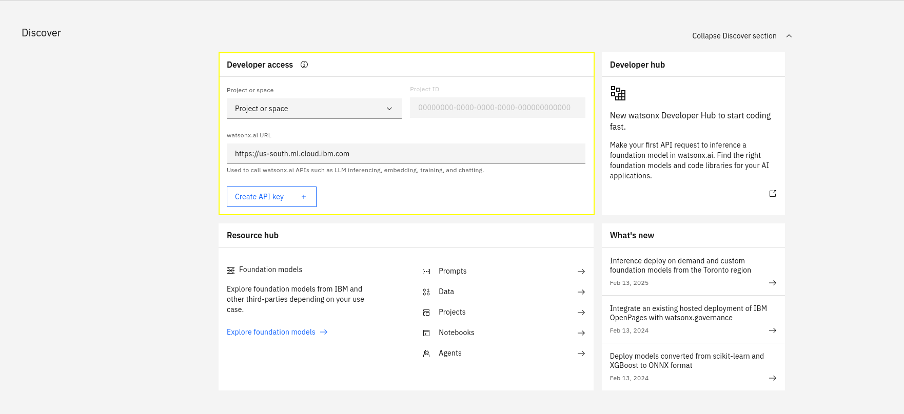

watsonx.ai for SOAR Analysts¶
Release Notes¶
Version |
Date |
Notes |
|---|---|---|
1.1.1 |
06/2025 |
Updated model list, rich text whitespace fixes, playbook execution API fixes, improved stability in generating embeddings, minor change to scan playbooks’ activation form. |
1.1.0 |
02/2025 |
Semantic context retrieval (embeddings), multilingual prompts, artifact scans can handle more file types, attachment scanning (equivalent to artifact scan), organization type ID resolution[1]. |
1.0.2 |
12/2024 |
Rich text output, request ID in logs, and a data processing fix for incidents with larger data. |
1.0.1 |
12/2024 |
Bugfix for SOAR versions <= 51.0.2.1 and >= 51.0.4.1 for Note Conversation Function. |
1.0.0 |
12/2024 |
Initial “Early Access” release. Uses watsonx.ai SaaS Version |
Overview¶
Leverage generative AI with watsonx.ai for artifact scanning, incident summarization and Q&A, and generic watsonx.ai text generation.

Key Features¶
Q&A: ask watsonx.ai questions about an incident, artifact, or attachment.
Portions of relevant SOAR data will be used in the answer generation process.
Prompts can be written in the following languages: English, French, German, Portuguese, and Spanish.
Responses will then be generated in the given language.
Artifact and attachment analysis:
Use playbooks to quickly generate a report on an artifact or attachment, as a preliminary assessment.
Supported file types include: any plaintext file,
pdf,docx,xlsx,pptx,png,jpg, andeml.Note: Image files will be converted to text using OCR.
Text generation:
Use watsonx.ai to generate text based on a given prompt in a function.
Requirements¶
This app supports the IBM Security QRadar SOAR Platform and the IBM Security QRadar SOAR for IBM Cloud Pak for Security.
Either SOAR Platform or IBM QRadar Suite installed.
A subscription to watsonx.ai.
A watsonx.ai Project ID
An IBM Cloud IAM API Key
A watsonx.ai Endpoint URL
These connection details can be found on the landing page for watsonx.ai, as seen in the following screenshot.

Click here for detailed instructions to get watsonx.ai connection details.
Watsonx.ai Subscription and Project¶
You will need to sign up to a watsonx subscription.
You can do so at https://dataplatform.cloud.ibm.com/registration/stepone?context=wx.
For testing in a non-production environment you can use a free trial subscription to watsonx.ai.
Using this account, create a project on the watsonx.ai platform.
These instructions work as of 2025-02-13. These steps may become outdated due to changes made outside of this app.
Watsonx.ai Project ID¶
Navigate to the Projects page

If you have not created a project yet, you can create one now, using the New Project + button on the top-right.

Navigate to your project.
Under the Manage tab, on the General section, copy the Project ID, you will need this later when configuring the app.

IBM Cloud IAM API Key¶
To use watsonx.ai from the watsonx.ai for SOAR app, you’ll need an IBM Cloud IAM API Key. To generate an API key, click on the menu icon in the top left of the watsonx.ai dashboard and open Access (IAM) under the Administration menu.

The Access IAM dashboard will open…
Choose API Keys from the navigation section then…
Click the Create + button to create a new API key.

Take note of the API key as this will also be used during app configuration.
Watsonx.ai Endpoint URL¶
The endpoint will depend on which region your watsonx.ai project was created in. You can see which region you’re using in the watsonx.ai dashboard in the dropdown at the top-right, next to the user icon.
Find the relevant Endpoint for your region at https://cloud.ibm.com/apidocs/watsonx-ai#endpoint-url.
Don’t use the prompt and/or notebooks endpoint.
Watsonx.ai Free Credits¶
Lite accounts make it easy to get started with IBM Cloud® and try out services.
When you’re ready to unlock the full IBM Cloud catalog, get extra free resources, and more, you can upgrade to a Pay-As-You-Go or Subscription account.
By upgrading to Pay-As-You-Go account, you would receive a $200 credit for 30 days. When you enter a credit card for a new Pay-As-You-Go account, you’ll receive a promotional credit to use on any IBM product including watsonx.ai. For more details please refer to Promotional credit for upgrading your account section here.
SOAR platform¶
The SOAR platform supports two app deployment mechanisms, Edge Gateway (also known as App Host) and integration server.
If deploying to a SOAR platform with an App Host, the requirements are:
SOAR platform >=
51.0.0.0.0.The app is in a container-based format (available from the AppExchange as a
zipfile).
If deploying to a SOAR platform with an integration server, the requirements are:
SOAR platform >=
51.0.0.0.0.The app is in the older integration format (available from the AppExchange as a
zipfile which contains atar.gzfile).Integration server is running
resilient-circuits>=51.0.2.0.0.If using an API key account, make sure the account provides the following minimum permissions:
Name |
Permissions |
|---|---|
Org Data |
Read |
Function |
Read |
Incident |
Read |
Playbook |
Read |
Guides are available on the IBM Documentation website at ibm.biz/soar-docs. On this web page, select your SOAR platform version. On the follow-on page, you can find the Edge Gateway Deployment Guide, App Host Deployment Guide, or Integration Server Guide by expanding Apps in the Table of Contents pane. The System Administrator Guide is available by expanding System Administrator.
Cloud Pak for Security¶
If you are deploying to IBM Cloud Pak for Security, the requirements are:
IBM Cloud Pak for Security >=
1.10.15.Cloud Pak is configured with an Edge Gateway.
Guides are available on the IBM Documentation website at ibm.biz/cp4s-docs. From this web page, select your IBM Cloud Pak for Security version. From the version-specific IBM Documentation page, select Case Management and Orchestration & Automation.
Proxy Server¶
The app does support a proxy server.
Python Environment¶
Python 3.11, and 3.12 are officially supported. When deployed as an app, the app runs on Python 3.11. Additional package dependencies may exist for each of these packages:
beautifulsoup4==4.12.3
faiss-cpu==1.9.0
jsonpath-ng==1.7.0
markdown2==2.5.3
nh3==0.2.19
numpy==2.2.0
py3langid==0.3.0
resilient-circuits>=51.0.2.0.0
scikit-learn==1.5.2
tika==2.6.0
tiktoken==0.8.0
Installation¶
Installing the App¶
To install or uninstall an App or Integration on the SOAR platform, see the documentation at ibm.biz/soar-docs.
To install or uninstall an App on IBM Cloud Pak for Security, see the documentation at ibm.biz/cp4s-docs and follow the instructions above to navigate to Orchestration and Automation.
App Configuration¶
The following table provides the settings you need to configure the app. These settings are made in the app.config file. See the documentation discussed in the Requirements section for the procedure.
Config |
Required |
Example |
Description |
|---|---|---|---|
watsonx_api_key |
Yes |
0123-4567-89ab-cdef |
Your watsonx.ai API key - see IBM Cloud IAM API Key. This should be saved as an App Secret. |
watsonx_endpoint |
Yes |
|
The watsonx.ai API URL - see watsonx.ai Endpoint URL. |
watsonx_project_id |
Yes |
0123-4567-89ab-cdef |
The watsonx.ai project id - see watsonx.ai Project ID. |
render_markdown |
No |
|
Set to |
default_language |
No |
|
Language used for scans, and fallback language if prompt’s language can’t be detected. |
App usage¶
Note Conversation¶
The watsonx.ai Note Conversation playbook allows for incident, artifact, and attachment Q&A

This playbook is triggered when a note with the text
@watsonxis added to an incident.By default, this will be an incident Q&A, where incident details, including artifact and attachment metadata, are included in context with the user’s prompt.
Artifact or attachment Q&A can be invoked by including the object’s name in square brackets.
Instead of using incident data in context for generating a response, only relevant artifact/attachment data will be included.
For attachments, and artifacts with an attached file, the file’s content will be included.
Examples of supported file types can be checked in the What file formats can be scanned?
E.g.,
@watsonx does the artifact [123.sh] seem like it could be used maliciuously?.E.g.,
@watsonx respond with the text in the attachment [incident_overview.png]..
Artifact and Attachment Scan¶


The watsonx.ai Scan Artifact and watsonx.ai Scan Attachment playbooks summarize, and outline potential dangers of file contents.
This scan is not intended to replace Threat Intelligence sources for performing malware file hash scans. It’s intended use is to be a utility to quickly summarize and assess natural language, and/or code in a document.
What file formats can be scanned?¶
This app uses the Apache Tika project to extract text from documents.
This allows for plaintext to be extracted extract from text-based documents as well as extracting OCR text from images.
This means that any non-text information from an image is disregarded, and if text is not clear, it may not be extracted.
Examples of supported file formats include:
Document formats: pdf, docx, pptx, odf, rtf
Image formats: png, jpg, gif, bmp
Any generic plaintext file with standard text encoding: txt, md, json, code source files.
Text Generation¶
The watsonx.ai Text Generation function can be used to roll out your own genAI solutions using playbook logic.
This function facilitates calls to the Text Generation (
/ml/v1/text/generation?version=2023-05-29) watsonx.ai API endpoint.Playbook logic can act as a force multiplier to create sophisticated AI workflows to perform predefined tasks automatically.
How to get the best out of the app¶
Background on how a note conversation response is generated¶
As of version 1.1.0, semantic search is used to find the most relevant data to answer your question from a dataset.
Embeddings (semantic representations of text) are generated for queried data.
Then, the given prompt is embedded, and the distance between the meaning of your prompt and the meaning of each piece of embedded data is compared.
Data that is considered close to the data you are asking for will then be added as context to a call to an LLM with your query.
Prompting Guide¶
Response Quality¶
Quality of response can differ between LLMs specifically when the input context is larger than 4KB limit. There are some models that cannot exceed the limit of 4KB context size.
Most of the Note Conversation answers are returned in about ~6 seconds. However, it’s also important to note that large artifacts would also take more time to process.
Asking very specific and clearly defined questions can improve the quality of the generated responses. When querying LLMs, it’s essential to be as clear and specific as possible about the information or task you want the model to address. This will help the model to generate more accurate and relevant responses.
For example, summarizing an incident for a CTO would be a different response than summarizing an incident for a Security analyst.
Another example would be if you do not want to include some artifact types in your queries then it should be specifically mentioned.
Another example would be finding names of libraries in a python artifact.
@watsonx what python libraries have been imported in [artifact_name.py]? Do not share the code but only the names of the libraries that have been imported. Do not share the methods or functions of those libraries. Generally, libraries are imported with the syntax ```import <library name>
If the initial results are unsatisfactory, consider refining your question.
You can refine your query by continuing the conversation in replies.

SOAR Customizations¶
Function - watsonx.ai Converse via Notes¶
Allow conversation in an incident’s Notes tab. Will take a portion of previous notes in the reply chain as context.
Inputs:
Name |
Type |
Required |
Example |
Tooltip |
|---|---|---|---|---|
|
|
Yes |
|
You can use Data Navigator for this |
|
|
Yes |
|
Which watsonx.ai generative AI model to use to perform the task? |
|
|
Yes |
|
ID for the Incident note to respond to. You can use Data Navigator. |
Outputs:
NOTE: This example might be in JSON format, but
resultsis a Python Dictionary on the SOAR platform.
results = {
"generated_text": "\u003cp\u003eText from watsonx.ai\u003c/p\u003e",
"metadata": {
"created_at": "2023-07-21T16:52:32.190Z",
"generated_token_count": 8,
"input_token_count": 10,
"model_id": "ibm/granite-3-2b-instruct",
"stop_reason": "EOS token"
},
"raw_output": "Text from watsonx.ai",
"tag": "HTML model tag to be prefixed before any AI-generated content"
}
Example Function Input Script:
inputs.fn_watsonx_analyst_incident_id = incident.id
inputs.fn_watsonx_analyst_model_id = "ibm/granite-3-2b-instruct"
inputs.fn_watsonx_analyst_note_id = note.id
Example Function Post Process Script:
generated_text = playbook.functions.results.ai_response["content"]["generated_text"]
tag = playbook.functions.results.ai_response["content"]["tag"]
if generated_text != "":
note.addNote(tag + generated_text)
Function - watsonx.ai Scan Artifact¶
Use watsonx.ai to scan an artifact, and assess whether the artifact indicates any malicious activity. Design to work with log files, scripts (e.g. Bash, Python, Lua, Powershell, Perl).
Inputs:
Name |
Type |
Required |
Example |
Tooltip |
|---|---|---|---|---|
|
|
Yes |
|
You can use data navigator to add this. |
|
|
Yes |
|
You can use Data Navigator for this |
|
|
Yes |
|
Which watsonx.ai generative AI model to use to perform the task? |
|
|
No |
|
Optional grounding prompt |
Outputs:
NOTE: This example might be in JSON format, but
resultsis a Python Dictionary on the SOAR platform.
results = {
"generated_text": "\u003cp\u003eText from watsonx.ai\u003c/p\u003e",
"metadata": {
"created_at": "2023-07-21T16:52:32.190Z",
"generated_token_count": 8,
"input_token_count": 10,
"model_id": "ibm/granite-3-2b-instruct",
"stop_reason": "EOS token"
},
"raw_output": "Text from watsonx.ai",
"tag": "HTML model tag to be prefixed before any AI-generated content"
}
Example Function Input Script:
None
Example Function Post Process Script:
generated_text = playbook.functions.results.ai_response["content"]["generated_text"]
tag = playbook.functions.results.ai_response["content"]["tag"]
if generated_text:
generated_text = generated_text.strip()
incident.addNote(tag + generated_text)
Function - watsonx.ai Scan Attachment¶
Use watsonx.ai to scan an artifact, and assess whether the attachment indicates any malicious activity. Design to work with log files, scripts (e.g. Bash, Python, Lua, Powershell, Perl), but should be able to summarize other textual files.
Inputs:
Name |
Type |
Required |
Example |
Tooltip |
|---|---|---|---|---|
|
|
Yes |
|
You can use data navigator to set this field. |
|
|
Yes |
|
You can use Data Navigator for this |
|
|
Yes |
|
Which watsonx.ai generative AI model to use to perform the task? |
Outputs:
NOTE: This example might be in JSON format, but
resultsis a Python Dictionary on the SOAR platform.
results = {
"generated_text": "\u003cp\u003eText from watsonx.ai\u003c/p\u003e",
"metadata": {
"created_at": "2023-07-21T16:52:32.190Z",
"generated_token_count": 8,
"input_token_count": 10,
"model_id": "ibm/granite-3-2b-instruct",
"stop_reason": "EOS token"
},
"raw_output": "Text from watsonx.ai",
"tag": "HTML model tag to be prefixed before any AI-generated content"
}
Example Function Input Script:
inputs.fn_watsonx_analyst_model_id = "ibm/granite-3-2b-instruct"
inputs.fn_watsonx_analyst_incident_id = incident.id
inputs.fn_watsonx_analyst_attachment_id = attachment.id
Example Function Post Process Script:
generated_text = playbook.functions.results.ai_response["content"]["generated_text"]
tag = playbook.functions.results.ai_response["content"]["tag"]
if generated_text:
generated_text = generated_text.strip()
incident.addNote(tag + generated_text)
Function - watsonx.ai Text Generation¶
Perform Text Generation using watsonx.ai. Can replace ‘{}’ in prompts with comma-separated strings in fn_watsonx_analyst_arguments.
Inputs:
Name |
Type |
Required |
Example |
Tooltip |
|---|---|---|---|---|
|
|
No |
|
Comma-separated arguments to replace ‘{}’s in the prompt |
|
|
Yes |
|
Which watsonx.ai generative AI model to use to perform the task? |
|
|
Yes |
|
What you are asking the LLM |
|
|
No |
|
Optional grounding prompt |
Outputs:
NOTE: This example might be in JSON format, but
resultsis a Python Dictionary on the SOAR platform.
results = {
"generated_text": "\u003cp\u003eText from watsonx.ai\u003c/p\u003e",
"metadata": {
"created_at": "2023-07-21T16:52:32.190Z",
"generated_token_count": 8,
"input_token_count": 10,
"model_id": "ibm/granite-3-2b-instruct",
"stop_reason": "EOS token"
},
"raw_output": "Text from watsonx.ai",
"tag": "HTML model tag to be prefixed before any AI-generated content"
}
Example Function Input Script:
None
Example Function Post Process Script:
None
Script - watsonx.ai Add Artifact Report to Notes¶
Object: artifact
Script Text:
generated_text = playbook.functions.results.ai_response["content"]["generated_text"]
tag = playbook.functions.results.ai_response["content"]["tag"]
if generated_text:
generated_text = generated_text.strip()
incident.addNote(tag + generated_text)
Script - watsonx.ai Respond to note¶
Object: note
Script Text:
generated_text = playbook.functions.results.ai_response["content"]["generated_text"]
tag = playbook.functions.results.ai_response["content"]["tag"]
if generated_text != "":
note.addNote(tag + generated_text)
Playbooks¶
Playbook Name |
Description |
Activation Type |
Object |
Status |
Condition |
|---|---|---|---|---|---|
watsonx.ai Note Conversation |
This Playbook is triggered when a user writes a note that contains “@watsonx” at the start of the note. A reply will be generated by IBM watsonx.ai generative AI, and added as a reply to the first note. |
Automatic |
note |
|
|
watsonx.ai Retry Note Conversation |
If a response fails to be generated, you can use this playbook on a note with a query for |
Manual |
note |
|
|
watsonx.ai Scan Artifact |
Watsonx reads the contents of the provided artifact if an attachment is supplied. Then, Watsonx gives a summary of the contents, and threat scores. |
Manual |
artifact |
|
|
watsonx.ai Scan Attachment |
None |
Manual |
attachment |
|
|
Troubleshooting & Support¶
If any of the actions fail, the following steps may help:
Check playbook progress on the incident
The playbook may have failed. If so, the error message in the function’s response may help you interpret the problem.
Check app logs
Download the apps’ logs from Administrator Settings -> Apps page. Go to the details of the app, and click “Download Logs.”
Function invocations will create a request ID, which can be used to identify logs for a specific invocation.
Check SOAR’s
client.loglog file which may give some extra information.
If these do not give sufficient information, then you may enable debug level logging for the app by editing the
app.configand addingloglevel=DEBUGinside the[resilient]section
For Support¶
This is a IBM Community provided app. Please search the Community ibm.biz/soarcommunity for assistance.